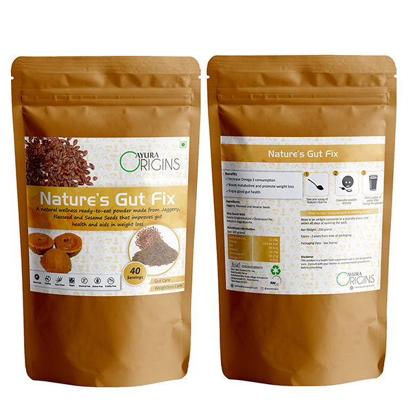

Composition
Each 100 gm Gut-Fix powder contains:
DL-Methionine : 5 gm
L-Lysine Hydrochloride : 5 gm
Essenpro (powder of clove) : 10 gm
Calcium Carbonate q.s to : 100 gm
Indications
To improve/restore rumen microbial health as well as intestinal health
To boost up development of intestine and intestinal villi in early stage
To prevent diarrhoea and dysentery
To increase immunity
To improve body weight and FCR (Feed Conversion Ratio)
To increase egg production & egg weight.
Benefits
Carminative or improve digestion
Improve peristalsis
Stimulate to increase hydrochloric acid in the stomach.
Dosage & Administration
Large animal : 10-15 gm Gut-Fix powder/day/cattle for 3-5 consecutive day.
Small animal : 5-7.5 gm Gut-Fix powder/day/calf for 3-5 consecutive days
Poultry : 1 gm/kg feed
Storage
Store in a cool & dry place, protect from light. Keep out of the reach of children.
Pack size
100 gm